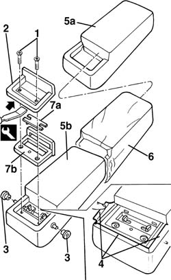
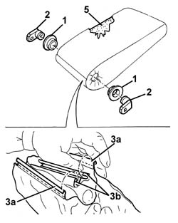

7050B22 Rear seat armrest' COVER - R.R. with armrest removed
- Path
- Procedures > 70 FITTINGS > 7050 REAR SEATS > 7050B rear seat head restraint/arm rest > 7050B22 Rear seat armrest' COVER - R.R. with armrest removed
- Kind
- repair procedure (removal / refitting; the operation number is the code)
- Applies to
- all engines; all production periods
- Interactive page
- https://sloeber94.github.io/elrnDB-a156/en/#/3238940
Applies to: all engines; all production periods
 Removing
Removing
 Refitting
Refitting7050B18 rear seat arm rest - r+r
1. Unscrew the bolts.
2. Remove the embellishment using the special tool. Use the tool in the area shown in the figure.
 | Name | Country |
|---|---|---|
2 | Scraper blade | 1.823.014.000 |
3. Remove the retainers.
4. Prise off the edges of the cover on the perimeter exposed by the trim.
5. Prise the cover (5a) off the padding (5b).
6. Recover the unwoven cloth protection.
7. If necessary, remove the cover (7a) and remove the trim (7b).

Applies to: all engines; all production periods
Refitting
RemovingCheck that the cover is intact and shows no signs of damage.
If removed, refit the trim and fit the cover.
Position the unwoven cloth protection on the padding.
Fit the padding cover and mould in place.
Fit the edges of the cover on the perimeter of the embellishment seating.
Fit the retainers.
Fit the embellishment.
Tighten the screws.
Applies to: all engines; all production periods; only with equipment: Station Wagon
Removing
Refitting1. Remove the bushes.
2. Remove the retainers.
3. Prise off the edges (3a) from the retaining grooves (3b).
4. Remove the cover.
5. Recover the unwoven cloth.

Applies to: all engines; all production periods; only with equipment: Station Wagon
Refitting
RemovingCheck that the cover is undamaged.
Position the unwoven cloth in place and fit the cover on the padding, then fit the edges in the retaining grooves.
Fit the retainers.
Fit the bushes.